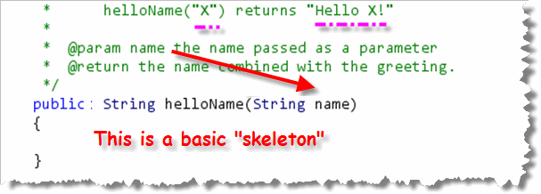
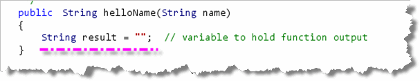
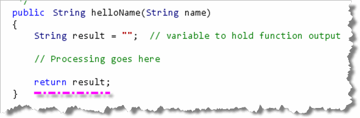
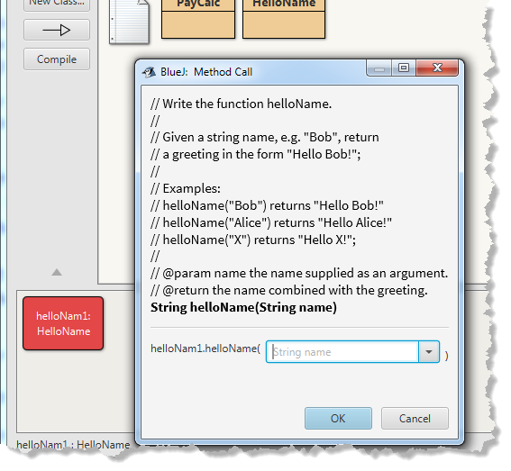
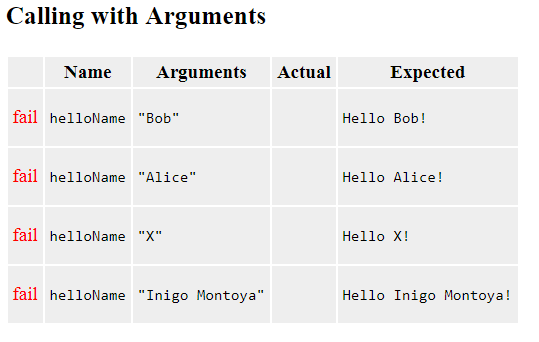
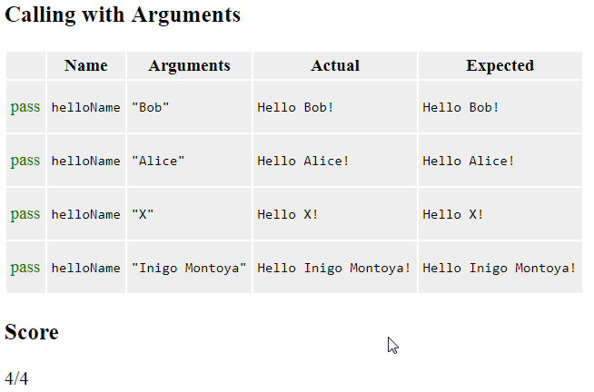

Let's get some practice writing functions. You want to start getting into shape for the programming proficiency problems, right?
Writing helloName
In BlueJ, open the file HelloName.java, which you'll find
in your download bundle, and we'll take a look at our first
function exercise.
As you can see, there is not much in the class except
for a Javadoc comment providing the documentation for
the function that I want you to write.
The first one of these is the helloName
problem, which is the simplest string function exercise
that I could come up with.:
 For each function problem you're given, you'll find:
For each function problem you're given, you'll find:
- The name of the function you are supposed to write.
In this case, you are writing a function named
helloName. - You'll be given some brief instructions about what the function should calculate. In this example, the function combines the name (passed as a parameter) with a greeting, and returns the whole thing.
- One of the most useful pieces of information you'll get is a set of examples. The examples will show different input and the expected output for those inputs.
- Every function problem will also provide Javadoc tags
for all the parameters (one
@paramtag for each parameter, in the order they are used), and an@returntag for the function. Usually, the description and examples are more useful for me. - Finally, you'll see a comment line that says something
like
//TODO WRITE YOUR CODE HERE. Replace that line with the header for your function.
Start With the Skeleton
 Always start by writing the "skeleton" for
your function. You want to make sure that your code starts out
syntactically correct, and then stays that way. As a side benefit,
often a bare-bones syntactically correct function skeleton will
actually pass some of the final tests, so you're sure to get some
points, even if you don't know how to completely finish a problem.
Always start by writing the "skeleton" for
your function. You want to make sure that your code starts out
syntactically correct, and then stays that way. As a side benefit,
often a bare-bones syntactically correct function skeleton will
actually pass some of the final tests, so you're sure to get some
points, even if you don't know how to completely finish a problem.
For a function, the first step towards writing a skeleton or "stub" is
to combine the return type, name, and parameters to write the header
and then add some braces to make the body. Here's an example:

Notice that:
- We got the return type by looking at the example
and the
@returnJavadoc tag. - We got the function name by looking at the first line in the problem definition as well as the examples. Make sure you spell the name exactly correct.
- We got the parameter name and type by looking
at both the example and the Javadoc
@paramtag.
NOTE: make sure that your functions are public. If
you forget to add the public then I won't be able
to test your code.
Complete the Skeleton
If you compile at this point, BlueJ will tell you
that your function skeleton is actually
syntactically incorrect.
That's because you are missing the
return statement that every function
must have.
Here's how to write the "first-cut", "no-thought" return
statement, just to get your code to compile and test.
- Create a local variable, of the same type as
the function return type. I usually name this
result. In this example,helloNamehas a return type ofString, so your first line should look like this:

I usually initialize theresultsvariable to the "empty" value for the type:"",0, orfalse. - Now, at the very end of your function, just add
return result;. This makes your function syntactically correct, so that it compiles and can be tested.

Informal Testing
Obviously, the helloName() function doesn't yet
do what it's supposed to do, since it only returns the empty
String, instead of a greeting. Once you've added the
code to construct the greeting, though, how will you know if you've
done it correctly?
Good question! Notice that this file only contains functions;
it doesn't have a main() method. One choice is
to use the BlueJ Workbench like we did in Chapter 2.
- Create an object in the BlueJ workbench
- call the
method by right-clicking and filling in the arguments, like this:

For more formal testing, you can add a main() method to
HelloName.java, and then use the testing techniques
you first learned about in Section 2.7 of your textbook, Implementing a Test Program.
Here's some code you could add to main():
HelloName obj = new HelloName();
System.out.println(obj.helloName("Bob"));
System.out.println("Expected: Hello Bob!");
Using CodeCheck
For this class, though, you can just use the tester I've already written
and uploaded to CodeCheck. Here's the output running CodeCheck
on the helloName() skeleton code:

As you can see, none of the correctness tests pass yet. Note that although the method that we are testing is named
helloName() (starting with a lowercase letter,
like the standard Java conventions recommend), the test program
will always start with a capital letter. Please
don't start your functions with a capital though.
Remember, your function must be syntactically correct before it can be tested. Unless your program compiles without errors, the test program will not be able to run it. The easiest way to do that is to practice writing function skeletons, like the one I've shown you here, until it just becomes second nature.
Finish Up helloName
After all this work, actually finishing helloName() is
a little anticlimactic. Remember that the purpose of a function is
to transform inputs into output. In our case, we have one input,
the String parameter name, and one
output, the String variable result.
Use simple concatenation to combine name
and a greeting, to produce the results specified by the problem
description like this:
result = "Hello " + name + "!";
Place this code between the line that creates result
and the line that returns it. Run CodeCheck after making these changes and you'll see that
all of the tests now pass:
